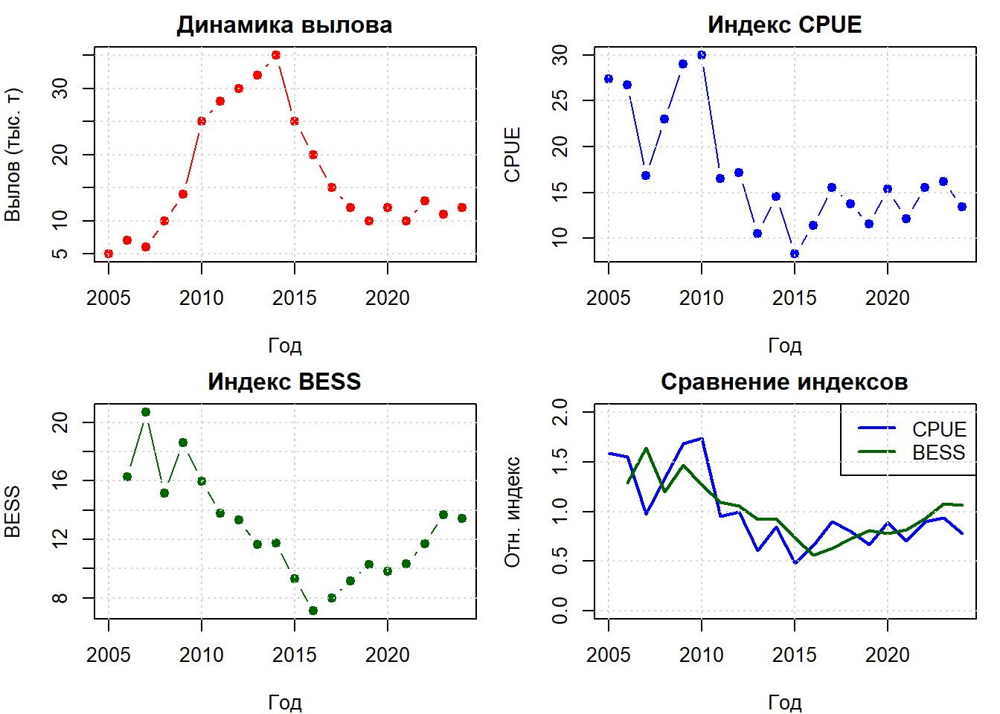

# ===============================================================
# СКРИПТ 1: ОСНОВЫ МОДЕЛИРОВАНИЯ И ДИАГНОСТИКИ В SPiCT
# Курс: Оценка водных биоресурсов при недостатке данных в R
# Автор: Баканев С. В.
# Дата создания: 28.08.2025
# ===============================================================
# ======================= ВВЕДЕНИЕ =============================
# SPiCT (Surplus Production model in Continuous Time) - это
# стохастическая продукционная модель для оценки запасов рыбы
# при ограниченных данных. Модель требует только временные ряды
# уловов и индексов биомассы (например, CPUE или научные съемки)
# ------------------- 1. ПОДГОТОВКА СРЕДЫ --------------------
## 1.1 Очистка рабочей среды (удаляем все объекты)
rm(list = ls())
## 1.2 Загрузка необходимых библиотек
library(spict) # Основной пакет для SPiCT моделированияЗагрузка требуемого пакета: TMBWelcome to spict_v1.3.8@107a32library(tidyverse) # Для обработки данных и визуализации-- Attaching core tidyverse packages ------------------------ tidyverse 2.0.0 --
v dplyr 1.1.4 v readr 2.1.5
v forcats 1.0.0 v stringr 1.5.2
v ggplot2 4.0.0 v tibble 3.2.1
v lubridate 1.9.4 v tidyr 1.3.1
v purrr 1.0.4 -- Conflicts ------------------------------------------ tidyverse_conflicts() --
x dplyr::filter() masks stats::filter()
x dplyr::lag() masks stats::lag()
i Use the conflicted package (<http://conflicted.r-lib.org/>) to force all conflicts to become errorslibrary(ggplot2) # Дополнительные возможности построения графиков
## 1.3 Установка рабочей директории
# ВАЖНО: Измените путь на вашу рабочую папку
setwd("C:/SPICT")
## 1.4 Настройка вывода чисел (опционально)
options(scipen = 999) # Отключение научной нотации
options(digits = 4) # Количество значащих цифр
# ------------------- 2. ЗАГРУЗКА ДАННЫХ --------------------
cat("\n========== ЗАГРУЗКА ДАННЫХ ==========\n")
========== ЗАГРУЗКА ДАННЫХ ==========## 2.1 Временной ряд (годы наблюдений)
# Период наблюдений с 2005 по 2024 год
Year <- 2005:2024
## 2.2 Данные по вылову (в тысячах тонн)
# Представляют общий коммерческий вылов по годам
# Обратите внимание на тренд: рост до 2014 г., затем снижение
Catch <- c(5, 7, 6, 10, 14, 25, 28, 30, 32, 35, # 2005-2014
25, 20, 15, 12, 10, 12, 10, 13, 11, 12) # 2015-2024
## 2.3 Индекс CPUE (улов на единицу усилия)
# Промысловый индекс, отражающий относительную биомассу
# Собирается в середине года (июль) во время промысла
CPUEIndex <- c(27.427120, 26.775958, 16.811997, 22.979653, 29.048568,
29.996072, 16.476301, 17.174455, 10.537272, 14.590435,
8.286352, 11.394168, 15.537878, 13.791166, 11.527548,
15.336093, 12.154069, 15.568450, 16.221933, 13.421132)
## 2.4 Индекс BESS (биомасса по научной съемке)
# Независимая оценка биомассы из научных траловых съемок
# Проводится в 4-м квартале года (октябрь)
# NA в первый год означает отсутствие съемки
BESSIndex <- c( NA, 16.270375, 20.691355, 15.141784, 18.594620,
15.975548, 13.792012, 13.328805, 11.659744, 11.753855,
9.309859, 7.104886, 7.963839, 9.161322, 10.271221,
9.822960, 10.347376, 11.703610, 13.679876, 13.413696)
## 2.5 Визуализация исходных данных
par(mfrow = c(2, 2), mar = c(4, 4, 2, 1))
# График вылова
plot(Year, Catch, type = "b", pch = 19, col = "red",
main = "Динамика вылова", xlab = "Год", ylab = "Вылов (тыс. т)")
grid()
# График CPUE
plot(Year, CPUEIndex, type = "b", pch = 19, col = "blue",
main = "Индекс CPUE", xlab = "Год", ylab = "CPUE")
grid()
# График BESS
plot(Year, BESSIndex, type = "b", pch = 19, col = "darkgreen",
main = "Индекс BESS", xlab = "Год", ylab = "BESS")
grid()
# График всех индексов (нормализованных)
plot(Year, CPUEIndex/mean(CPUEIndex, na.rm = TRUE), type = "l",
col = "blue", lwd = 2, ylim = c(0, 2),
main = "Сравнение индексов", xlab = "Год", ylab = "Отн. индекс")
lines(Year, BESSIndex/mean(BESSIndex, na.rm = TRUE), col = "darkgreen", lwd = 2)
legend("topright", c("CPUE", "BESS"), col = c("blue", "darkgreen"), lty = 1, lwd = 2)
grid()
par(mfrow = c(1, 1))
# ------------------- 3. ФОРМАТИРОВАНИЕ ДАННЫХ ДЛЯ SPiCT --------------------
cat("\n========== ПОДГОТОВКА ДАННЫХ ДЛЯ МОДЕЛИ ==========\n")
========== ПОДГОТОВКА ДАННЫХ ДЛЯ МОДЕЛИ ==========## 3.1 Создание входного объекта для SPiCT
# SPiCT требует специальный формат данных в виде списка
input_data <- list(
# Временной ряд вылова (обычно конец года)
timeC = Year,
obsC = Catch,
# Временные ряды индексов
# ВАЖНО: время индексов должно отражать когда они собраны
timeI = list(
Year + 0.5, # CPUE собирается в середине года (июль)
Year + 0.75 # BESS проводится в 4-м квартале (октябрь)
),
# Значения индексов (в том же порядке, что и timeI)
obsI = list(
CPUEIndex,
BESSIndex
)
)
## 3.2 Проверка и валидация входных данных
# Функция check.inp выполняет базовую проверку данных
# и удаляет нулевые, отрицательные и NA значения
inp <- check.inp(input_data, verbose = TRUE)Removing zero, negative, and NAs in I series 2 # Вывод структуры данных
cat("\nСтруктура входных данных:\n")
Структура входных данных:cat("Количество наблюдений вылова:", length(inp$obsC), "\n")Количество наблюдений вылова: 20 cat("Количество индексов:", length(inp$obsI), "\n")Количество индексов: 2 cat("Годы наблюдений:", range(inp$timeC), "\n")Годы наблюдений: 2005 2024 # ------------------- 4. НАСТРОЙКА МОДЕЛИ --------------------
cat("\n========== НАСТРОЙКА ПАРАМЕТРОВ МОДЕЛИ ==========\n")
========== НАСТРОЙКА ПАРАМЕТРОВ МОДЕЛИ ==========## 4.1 Установка априорных распределений (priors)
### 4.1.1 Параметр формы продукционной кривой (n)
# n = 2 соответствует модели Шефера (симметричная кривая)
# Фиксируем n = 2, так как данных недостаточно для его оценки
inp$priors$logn <- c(log(2), 0.1, 1) # (среднее, SD, использовать?)
inp$ini$logn <- log(2) # Начальное значение
inp$phases$logn <- -1 # -1 означает не оценивать
### 4.1.2 Априор для несущей способности (K)
# K - максимальная биомасса, которую может поддерживать среда
# Используем информативный априор на основе экспертных оценок
inp$priors$logK <- c(log(150), 0.7, 1) # log(150) тыс. тонн, CV ≈ 70%
### 4.1.3 Априор для начального состояния запаса
# logbkfrac = log(B_начальное/K)
# 0.75 означает, что в начале временного ряда запас был на 75% от K
inp$priors$logbkfrac <- c(log(0.75), 0.25, 1)
### 4.1.4 Априоры для параметров роста (опционально)
# Если есть информация о темпе роста популяции
# inp$priors$logr <- c(log(0.3), 0.5, 1)
## 4.2 Настройка неопределенности данных
### 4.2.1 Увеличение неопределенности для последних наблюдений
# Последние данные часто предварительные и менее надежные
inp$stdevfacC[length(inp$stdevfacC)] <- 2 # Удваиваем SD для последнего вылова
inp$stdevfacI[[2]][length(inp$stdevfacI[[2]])] <- 2 # Для последнего BESS
### 4.2.2 Установка минимальной неопределенности (опционально)
# inp$stdevfacC <- pmax(inp$stdevfacC, 0.2) # Минимум 20% CV
## 4.3 Технические настройки модели
### 4.3.1 Временной шаг для численного интегрирования
# Меньшие значения = выше точность, но медленнее расчет
inp$dteuler <- 1/16 # 16 шагов в году
### 4.3.2 Включение расчета матрицы ковариации
# Необходимо для оценки неопределенности и диагностики
inp$getJointPrecision <- TRUE
### 4.3.3 Робастность оценок (опционально)
# inp$robflag <- TRUE # Устойчивость к выбросам
# ------------------- 5. ЗАПУСК МОДЕЛИ --------------------
cat("\n========== ОЦЕНКА ПАРАМЕТРОВ МОДЕЛИ ==========\n")
========== ОЦЕНКА ПАРАМЕТРОВ МОДЕЛИ ==========## 5.1 Настройка оптимизатора
# Увеличиваем лимиты итераций для сложных случаев
inp$optimiser.control = list(
iter.max = 1e5, # Максимум итераций
eval.max = 1e5, # Максимум вычислений функции
rel.tol = 1e-10 # Относительная точность
)
## 5.2 Подгонка модели
# Основная функция для оценки параметров
cat("Запуск оптимизации...\n")Запуск оптимизации...fit <- fit.spict(inp)
## 5.3 Проверка сходимости
if (fit$opt$convergence == 0) {
cat("✓ Модель успешно сошлась\n")
} else {
cat("⚠ Проблемы со сходимостью. Код:", fit$opt$convergence, "\n")
cat("Сообщение:", fit$opt$message, "\n")
}<U+2713> Модель успешно сошлась## 5.4 Добавление остатков OSA для диагностики
# OSA (One-Step-Ahead) остатки используются для проверки модели
fit <- calc.osa.resid(fit)
## 5.5 Вывод основных результатов
print(summary(fit))Convergence: 0 MSG: relative convergence (4)
Objective function at optimum: -4.835549
Euler time step (years): 1/16 or 0.0625
Nobs C: 20, Nobs I1: 20, Nobs I2: 19
Residual diagnostics (p-values)
shapiro bias acf LBox shapiro bias acf LBox
C 0.1269 0.4387 0.0562 0.1348 - - . -
I1 0.9555 0.7813 0.3360 0.6800 - - - -
I2 0.9825 0.9472 0.1390 0.3601 - - - -
Priors
logn ~ dnorm[log(2), 0.1^2]
logalpha ~ dnorm[log(1), 2^2]
logbeta ~ dnorm[log(1), 2^2]
logK ~ dnorm[log(150), 0.7^2]
logbkfrac ~ dnorm[log(0.75), 0.25^2]
Fixed parameters
fixed.value
n 2
Model parameter estimates w 95% CI
estimate cilow ciupp log.est
alpha1 11.94775 2.680587 53.25274 2.4805
alpha2 5.06977 1.127092 22.80433 1.6233
beta 0.18792 0.037152 0.95057 -1.6717
r 0.37684 0.289449 0.49063 -0.9759
rc 0.37684 0.289449 0.49063 -0.9759
rold 0.37684 0.289449 0.49063 -0.9759
m 17.85915 16.267157 19.60694 2.8825
K 189.56564 153.817727 233.62154 5.2447
q1 0.14458 0.111028 0.18827 -1.9339
q2 0.11048 0.086140 0.14168 -2.2030
sdb 0.01792 0.004082 0.07867 -4.0219
sdf 0.32055 0.218175 0.47097 -1.1377
sdi1 0.21410 0.156324 0.29322 -1.5413
sdi2 0.09085 0.064838 0.12729 -2.3986
sdc 0.06024 0.014357 0.25275 -2.8094
Deterministic reference points (Drp)
estimate cilow ciupp log.est
Bmsyd 94.7828 76.9089 116.8108 4.552
Fmsyd 0.1884 0.1447 0.2453 -1.669
MSYd 17.8591 16.2672 19.6069 2.883
Stochastic reference points (Srp)
estimate cilow ciupp log.est rel.diff.Drp
Bmsys 94.7336 76.8594 116.7646 4.551 -0.0005195
Fmsys 0.1883 0.1447 0.2452 -1.669 -0.0004215
MSYs 17.8423 16.2533 19.5868 2.882 -0.0009416
States w 95% CI (inp$msytype: s)
estimate cilow ciupp log.est
B_2024.94 118.8550 96.94825 145.7118 4.7779
F_2024.94 0.1032 0.06467 0.1646 -2.2713
B_2024.94/Bmsy 1.2546 1.08443 1.4515 0.2268
F_2024.94/Fmsy 0.5478 0.34183 0.8779 -0.6018
Predictions w 95% CI (inp$msytype: s)
prediction cilow ciupp log.est
B_2026.00 123.1089 100.33664 151.0495 4.8131
F_2026.00 0.1032 0.04643 0.2293 -2.2713
B_2026.00/Bmsy 1.2995 1.11491 1.5147 0.2620
F_2026.00/Fmsy 0.5478 0.24587 1.2206 -0.6018
Catch_2025.00 12.4910 7.30335 21.3633 2.5250
E(B_inf) 137.4812 NA NA 4.9235
NULL# ------------------- 6. ДИАГНОСТИКА МОДЕЛИ --------------------
cat("\n========== ДИАГНОСТИКА МОДЕЛИ ==========\n")
========== ДИАГНОСТИКА МОДЕЛИ ==========## 6.1 Проверка остатков
### 6.1.1 Тест Шапиро-Уилка на нормальность
cat("\n--- Тест на нормальность остатков (Shapiro-Wilk) ---\n")
--- Тест на нормальность остатков (Shapiro-Wilk) ---cat(sprintf("Уловы (C): p-value = %.4f %s\n",
fit$diagn$shapiroC.p,
ifelse(fit$diagn$shapiroC.p > 0.05, "✓", "⚠")))Уловы (C): p-value = 0.1269 <U+2713>cat(sprintf("Индекс 1 (I1): p-value = %.4f %s\n",
fit$diagn$shapiroI1.p,
ifelse(fit$diagn$shapiroI1.p > 0.05, "✓", "⚠")))Индекс 1 (I1): p-value = 0.9555 <U+2713>cat(sprintf("Индекс 2 (I2): p-value = %.4f %s\n",
fit$diagn$shapiroI2.p,
ifelse(fit$diagn$shapiroI2.p > 0.05, "✓", "⚠")))Индекс 2 (I2): p-value = 0.9825 <U+2713>### 6.1.2 Проверка автокорреляции (Ljung-Box тест)
cat("\n--- Проверка автокорреляции (Ljung-Box тест) ---\n")
--- Проверка автокорреляции (Ljung-Box тест) ---cat(sprintf("Уловы (C): p-value = %.4f %s\n",
fit$diagn$LBoxC.p,
ifelse(fit$diagn$LBoxC.p > 0.05, "✓", "⚠")))Уловы (C): p-value = 0.1348 <U+2713>cat(sprintf("Индекс 1 (I1): p-value = %.4f %s\n",
fit$diagn$LBoxI1.p,
ifelse(fit$diagn$LBoxI1.p > 0.05, "✓", "⚠")))Индекс 1 (I1): p-value = 0.6800 <U+2713>cat(sprintf("Индекс 2 (I2): p-value = %.4f %s\n",
fit$diagn$LBoxI2.p,
ifelse(fit$diagn$LBoxI2.p > 0.05, "✓", "⚠")))Индекс 2 (I2): p-value = 0.3601 <U+2713>### 6.1.3 Дополнительные диагностические тесты
cat("\n--- Дополнительная диагностика ---\n")
--- Дополнительная диагностика ---cat(sprintf("Смещение уловов (biasC): p-value = %.4f %s\n",
fit$diagn$biasC.p,
ifelse(fit$diagn$biasC.p > 0.05, "✓", "⚠")))Смещение уловов (biasC): p-value = 0.4387 <U+2713>cat(sprintf("Автокорреляция уловов (acfC): p-value = %.4f %s\n",
fit$diagn$acfC.p,
ifelse(fit$diagn$acfC.p > 0.05, "✓", "⚠")))Автокорреляция уловов (acfC): p-value = 0.0562 <U+2713>## 6.2 Визуальная диагностика
# Создаем диагностические графики